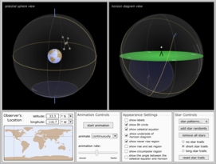
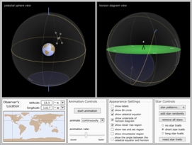

Are you studying for something other than Test 1? Click the tab (above) for your upcoming test.
Note that the page numbers given in these tabs are for the PDF of the OpenStax.org "Astronomy" textbook.
Here are the chapters for Test 1, in the order that we covered them:
Chapter 1 (Overview of our place in the universe)
Chapter 2 (What we see in the sky, basic motions of the Earth, ancient models of the cosmos)
Chapter 3 (Planetary motion, Newton's laws, gravity, orbits)
Items in boldface type are vocabulary terms and key concepts. They can often be found in either boldface or italics in the textbook.
For each of these tests, you can bring one (1) 4" x 6" card of notes. You can use both sides, but it has to be hand-written, and it has to be turned in to me the day before the test.
Section 1.2 talks about the nature of science. Here are some basic things to know about this:
In section 1.5, we first learn about the concept of light travel time. Here are examples of the kinds of questions I might ask about this: (Note: these are just examples.)
Next, we got an overview of the universe (Sec. 1.6). Here are the basics to know and understand:
In Section 1.19, the authors compared the history of the universe to a calendar year (See Fig. 1.15) In this comparison, when (in the calendar year) did our solar system form? When did the dinosaurs appear? When did they become extinct? When did humans appear?
The first section, 2.1, has a lot of detailed information to know:
For starters, what do we mean by the celestial sphere? (In class, I might have referred to the ancient model of the “Two-Sphere Universe”. This is basically the same thing shown in Fig. 2.3.)
We probably looked at the sky on the planetarium dome in order to see and understand these concepts better. Here are things you should know and understand, based on the textbook and the planetarium demonstrations:
To get you started, try playing with this simulation, which will help you understand the difference between what we called the `Snow-Globe Universe' and the `Two-Sphere Universe'.
(These simulations were made by the good folks at the University of Nebraska, Lincoln.)
I RECOMMEND OPENING THE SIMULATION IN A NEW BROWSER TAB, SO YOU CAN EASILY LOOK AT THIS LIST *AND* THE SIMULATION.
First, drag to rotate the model around, and look at it from different directions. Then hit `Switch'. Then Switch back. Then move the slider, hit `switch', and so on.

What would look different about the sky if you were at different latitudes on the Earth? (And what does latitude mean, anyway? It’s defined in Section 2.1.)
Here are some good examples of this "latitude effect" to be able to visualize:
The sky as seen from: the Earth’s North Pole
The sky as seen from the Earth’s South Pole
The sky as seen from the Earth’s equator
The sky as seen from our latitude here in California
The sky as seen from a latitude in the Earth’s southern hemisphere, like Australia or South Africa.
I probably demonstrated most of these things on the planetarium dome. Fig. 2.5 will also be helpful here.
What do we call the star that currently appears very close to the north celestial pole?
How do astronomers use angles to measure the apparent distances between objects on the celestial sphere? (There’s an `Astronomy Basics’ box in the textbook about this.)
Next, here's their simulation of the diurnal motion. There are a ton of great features in this one, and you can really learn a lot about how the rotating Earth makes it look like the sky is rotating! If I can ever find the time, I'd love to write a `how-to guide' for this simulator, and post it in the class's blog section. For now, I just recommend playing around with this one:

Here's a simple one, but a good one - a simulation of the Big Dipper, showing how the stars are actually scattered through space, even though they seem to be `attached' to a sphere (drag-rotate the model):

Some details to know about the apparent annual motions in the sky:
The line that runs right along the middle of this band is the Sun’s path during the apparent annual motion. What is its angle to the celestial equator? (There’s a figure that shows this.)
As seen with the unaided eye, what is the difference between the “fixed stars” and the planets?
What’s the modern definition of a constellation? What’s the difference between a constellation and an asterism?
Next, in Section 2.2, we dealt with the origins of astronomy. Things to know:
Now for a big, important concept in the history of astronomy: The Ptolemaic model of the solar system:
In the box titled “Making Connections – Testing Astrology”, what did the statisticians find when they looked up the sun signs of people who re-enlisted in the Marines? Where these Marines more likely to have a particular sign? What happened when Geoffrey Dean reversed the astrological readings of 22 people? Did people think these `reversed’ readings still applied to them?
Section 2.4 gets us into the beginnings of modern astronomy:
What’s the difference between Copernicus’s heliocentric model of the solar system and the earlier geocentric model?
In class, I probably made a big deal about the astronomical observations of Galileo. These had a lot to do with testing the heliocentric vs. geocentric models. Here are the main things to understand and know:
Try the simulations shown below, to better understand the `Galileo Venus story'. (As always, many thanks to the good folks at the University of Nebraska, who made these simulations!)
1) Play with this model, which shows VENUS'S PHASES IN THE PTOLEMAIC SYSTEM. (I recommend right-clicking it and opening it in a new tab.) Run the animation a few times, stop it, start it, and ask yourself this question: What is the only phase that Venus shows in this model? Compare the animation to Fig. 2.18

2) Now, play with this next model, which shows VENUS'S PHASES IN THE COPERNICAN SYSTEM. (Again, I recommend right-clicking it to open it in a new tab.) Drag Venus and the Earth to different positions, and see what Venus looks like from the Earth. Run it as an animation a few times. Always try to make sure you can understand why Venus shows the phase it does, as seen from the Earth. What phase does Venus show, in this model, that it didn't show in the Ptolemaic model?

And if you're just dying to do one more simulation, try this one… which planet is Earth, and which one is Venus?

What sort of observations did Tycho Brahe make, that were important to Johannes Kepler?
Next, we dealt with Kepler, who figured out some very important things about the planets' orbits:
Make sure you know and understand these things about Kepler’s first two “laws”:
• What is an ellipse?
• What are the foci of an ellipse?
• What's the semimajor axis of an ellipse?
• What does it mean if an ellipse has a high eccentricity?
• What do ellipses have to do with planetary motion?
• Make sure you don't confuse the terms ellipse and eclipse.
To better understand what an ellipse is, and what eccentricity is, play around with the next UNL simulation. Try this:
1 Move the sliders around to make the orbit look more eccentric or less eccentric.
2 If the number "e" has a large value, is the orbit more elliptical-looking, or less elliptical-looking?
3 Where are the foci in this simulation? (Make sure to compare the simulation to Fig. 3.4.)

Kepler's Second Law - Make sure you understand the following points:
• What does the Second Law say?
• Where, in its orbit, would an object be moving the fastest? Moving the slowest?
Kepler's Third Law - Make sure you understand the following points:
• As you go farther from the Sun, what happens to the time that it takes a planet to orbit the Sun?
• What does this imply about the speed at which, say, an outer planet is moving (relative to an inner one?)
• Would a `year' on an inner planet (like Mercury) be longer or shorter than the Earth's year? How about for an outer planet (like Neptune)?
And, just to make sure you’re clear about it, what is an astronomical unit? And what is the Earth’s orbital period, measured in Earth years?
EXTRA CREDIT: Although no math is required in this class, you might get some extra points on the test if you can solve problems like the ones shown in Example 3.1, which is in Section 3.1.
As always, there's a detailed UNL simulation for Kepler's Laws. Like some of the other simulations, this one is very detailed. You might find yourself getting lost in all the details. But, if you have time to play around with it, exploring it step-by-step, you can learn a lot about Kepler's laws of planetary motion. This would be a great simulation for you to explore in a group study session, or for one or more students to explore with me during office hours!
")
Newton discovered three laws of motion that provided the foundation for understanding things like the orbits of planets around the Sun. There are a fair number of terms and details to keep straight when studying Newton. Here are some things to make sure you understand:
What is Newton's First Law? (Note: It's basically the same thing as one of Galileo's discoveries, which is described on p. 58, in the paragraph that begins `If an object is slid…’)
If an object is moving through space at a constant speed, in a straight line, what will happen to it, if no forces act on it? The textbook described Newton's laws of motion fairly briefly, and you can try to make drawings showing a spacecraft that has its motion changed by forces. If you have these drawings in your notes, it's well worth reviewing them in detail. Make sure you're clear on how forces are what cause changes in motion.
What's a specific term we used for a `change in motion'? In class, we may have talked about how, in your car, you've got three controls for changing motion, rather than just the one that most people think of. In our drawings of the spacecraft, how did we show three different sorts of changes in motion?
What is Newton's Second Law? It may be easiest to think of it this way:
If we apply a larger force to an object, do we get a bigger change in motion, or a smaller one?
If we make an object more massive, will the same force cause a bigger change in motion, or a smaller change?
(Hint: Think about hitting a baseball with a bat. This causes the ball's motion to change. Think about how a harder hit, or a heavier ball, would lead to different scenarios for the ball's change in motion.)
What is Newton's Third Law? This is the one that people have most commonly heard expressed as a spoken or written phrase. Here's an example of something important to understand about the Third Law: How does it allow a rocket to work? Is it really necessary for the rocket's exhaust to hit something, in order for the rocket to move? Or can a rocket, floating in empty space, ignite its engine and start moving? How is the Third Law relevant here?
In addition to his three laws of motion (which were covered on Test 1), Newton also came up with a very important idea called universal gravitation. (It's sometimes called mutual gravitation, too.) What does this mean? For example, if you travel across the universe, are you ever `beyond' the gravitational pull of the Earth?
What does it mean to say that the law of mutual gravitation is an inverse square law?
(If you're feeling ambitious, you might want to play with UNL's Gravity Algebra simulation and their Newton's Law of Gravity Calculator . I've included these as text links, so people won't get too scared if they see something math-y-looking. However, even if you don't like math, these simulations might be worth exploring, because they do the math for you! They show what the results of Newton's `gravity math' are, when you stick different numbers into the formulas.)
EXTRA CREDIT: Although no math is required in this class, you can get some extra points on the test if you can solve problems like the ones shown in Example 3.4, which is in Section 3.3.
Note that the page numbers given in these tabs are for the PDF of the OpenStax.org "Astronomy" textbook.
Here are the chapters for Test 1, in the order that we covered them:
Chapter 1 (Overview of our place in the universe)
Chapter 2 (What we see in the sky, basic motions of the Earth, ancient models of the cosmos)
Chapter 3 (Planetary motion, Newton's laws, gravity, orbits)
Items in boldface type are vocabulary terms and key concepts. They can often be found in either boldface or italics in the textbook.
For each of these tests, you can bring one (1) 4" x 6" card of notes. You can use both sides, but it has to be hand-written, and it has to be turned in to me the day before the test.
Chapter 1: Science and the Universe: A Brief Tour
Section 1.2 talks about the nature of science. Here are some basic things to know about this:
- The scientific method begins with many __________ over a period of time
- The two early models of the universe differed from each other in what main way?
- What is a hypothesis?
- What is the key thing that you have to be able to do to a hypothesis?
- What do we mean when we say that astronomy is both an observational science and a historical science?
In section 1.5, we first learn about the concept of light travel time. Here are examples of the kinds of questions I might ask about this: (Note: these are just examples.)
- What is the speed of light, in light years per year?
- If an object (say, a star cluster or nebula) is 1000 light-years away, when will Earth-bound astronomers learn about a change in that object that occurs right now?
- If you were in a galaxy 100 million light years away, and could somehow observe the Earth in detail, what would you see walking around on its surface?
- What is the advantage that astronomers get from light travel time? How is it useful to them? Why does this make them want bigger and bigger telescopes?
Next, we got an overview of the universe (Sec. 1.6). Here are the basics to know and understand:
- What planet do we live on?
- How could a space traveler easily tell our planet from the others in our solar system, just by looking at it?
- What do we call our planet’s natural satellite?
- In Fig. 1.8, what are the objects that are currently called planets, and what’s their order outward from the Sun? There are some other objects in this figure – what are they called? (You don’t have to memorize their names or order for this test.)
- Make sure you’re clear on the difference between a solar system and a galaxy. What does a solar system have at its center? What is the name of the galaxy we live in?
- What does our galaxy look like, as seen from here on Earth? (See Fig. 1.10 – this would be a good example of the kind of image that might show up in a slide question on a test.)
- What is the difference between a light-year and an astronomical unit? How is each one defined?
- How do astronomers define the universe?
- What is the nearest large galaxy to ours? (Being able to recognize a picture of it, like Fig. 1.13, and knowing that it probably looks a lot like our galaxy, might come in handy on a slide question.)
In Section 1.19, the authors compared the history of the universe to a calendar year (See Fig. 1.15) In this comparison, when (in the calendar year) did our solar system form? When did the dinosaurs appear? When did they become extinct? When did humans appear?
Chapter 2: Observing the Sky: The Birth of Astronomy
The first section, 2.1, has a lot of detailed information to know:
For starters, what do we mean by the celestial sphere? (In class, I might have referred to the ancient model of the “Two-Sphere Universe”. This is basically the same thing shown in Fig. 2.3.)
We probably looked at the sky on the planetarium dome in order to see and understand these concepts better. Here are things you should know and understand, based on the textbook and the planetarium demonstrations:
- What do we mean by the apparent diurnal motion of the sky, and what do we mean by the apparent annual motions? (The book doesn’t define these right at the beginning of Chapter 2, but we probably spent a day on diurnal motions, and a day on annual motions, and defined them in class.)
- What are the horizon and the zenith?
- What is a celestial pole?
- How many celestial poles are there, and which one do we see here in California?
To get you started, try playing with this simulation, which will help you understand the difference between what we called the `Snow-Globe Universe' and the `Two-Sphere Universe'.
(These simulations were made by the good folks at the University of Nebraska, Lincoln.)
I RECOMMEND OPENING THE SIMULATION IN A NEW BROWSER TAB, SO YOU CAN EASILY LOOK AT THIS LIST *AND* THE SIMULATION.
First, drag to rotate the model around, and look at it from different directions. Then hit `Switch'. Then Switch back. Then move the slider, hit `switch', and so on.
- On which part of the horizon do objects seem to rise? To set?
- What part of the sky has stars that never rise or set?
- What do we call this zone of the sky, with neither setting nor rising?
What would look different about the sky if you were at different latitudes on the Earth? (And what does latitude mean, anyway? It’s defined in Section 2.1.)
Here are some good examples of this "latitude effect" to be able to visualize:
The sky as seen from: the Earth’s North Pole
The sky as seen from the Earth’s South Pole
The sky as seen from the Earth’s equator
The sky as seen from our latitude here in California
The sky as seen from a latitude in the Earth’s southern hemisphere, like Australia or South Africa.
I probably demonstrated most of these things on the planetarium dome. Fig. 2.5 will also be helpful here.
What do we call the star that currently appears very close to the north celestial pole?
How do astronomers use angles to measure the apparent distances between objects on the celestial sphere? (There’s an `Astronomy Basics’ box in the textbook about this.)
Next, here's their simulation of the diurnal motion. There are a ton of great features in this one, and you can really learn a lot about how the rotating Earth makes it look like the sky is rotating! If I can ever find the time, I'd love to write a `how-to guide' for this simulator, and post it in the class's blog section. For now, I just recommend playing around with this one:

Here's a simple one, but a good one - a simulation of the Big Dipper, showing how the stars are actually scattered through space, even though they seem to be `attached' to a sphere (drag-rotate the model):
Some details to know about the apparent annual motions in the sky:
- How do the constellations look different at different times of year?
- How does the Sun appear to move, relative to the background stars?
- What do we call the `band’ of constellations against which the Sun appears to move? (See Fig. 2.6.)
The line that runs right along the middle of this band is the Sun’s path during the apparent annual motion. What is its angle to the celestial equator? (There’s a figure that shows this.)
As seen with the unaided eye, what is the difference between the “fixed stars” and the planets?
What’s the modern definition of a constellation? What’s the difference between a constellation and an asterism?
Next, in Section 2.2, we dealt with the origins of astronomy. Things to know:
- What were two lines of evidence that Aristotle used, to demonstrate that the Earth is a sphere?
- Why did Aristotle and other ancient thinkers reject Aristarchus’s proposal that the Earth might move around the Sun? (Make sure you understand what they meant by parallax, and why they thought it disproved the motion of the Earth.)
- How did Eratosthenes measure the size of the Earth? (In class, we probably drew our own versions of Figs. 2.10 and 2.11, and went over them in some detail.)
- What were the two big discoveries made by Hipparchus?
- How does the apparent magnitude system work? (Hint: Why can it be so confusing for beginning astronomers to understand?)
- What is the apparent motion we call precession? (There’s a chance we might have seen this demonstrated on the planetarium dome.)
Now for a big, important concept in the history of astronomy: The Ptolemaic model of the solar system:
- First, what is retrograde motion? We probably spent some time demonstrating this on the planetarium dome.
- How did the Ptolemaic model use epicycles, deferents, and equant points to explain things like retrograde motion? (See Fig. 2.14.)
In the box titled “Making Connections – Testing Astrology”, what did the statisticians find when they looked up the sun signs of people who re-enlisted in the Marines? Where these Marines more likely to have a particular sign? What happened when Geoffrey Dean reversed the astrological readings of 22 people? Did people think these `reversed’ readings still applied to them?
Section 2.4 gets us into the beginnings of modern astronomy:
What’s the difference between Copernicus’s heliocentric model of the solar system and the earlier geocentric model?
In class, I probably made a big deal about the astronomical observations of Galileo. These had a lot to do with testing the heliocentric vs. geocentric models. Here are the main things to understand and know:
- How did Galileo’s observations of the phases of Venus argue for a Sun-centered solar system?
- How did his discovery of the moons of Jupiter help argue for the heliocentric model?
- Why did his observations of the Earth’s Moon argue against the Aristotelian/Ptolemaic model of the universe?
- What did Galileo discover about the Milky Way – what is it really made of?
Try the simulations shown below, to better understand the `Galileo Venus story'. (As always, many thanks to the good folks at the University of Nebraska, who made these simulations!)
1) Play with this model, which shows VENUS'S PHASES IN THE PTOLEMAIC SYSTEM. (I recommend right-clicking it and opening it in a new tab.) Run the animation a few times, stop it, start it, and ask yourself this question: What is the only phase that Venus shows in this model? Compare the animation to Fig. 2.18
2) Now, play with this next model, which shows VENUS'S PHASES IN THE COPERNICAN SYSTEM. (Again, I recommend right-clicking it to open it in a new tab.) Drag Venus and the Earth to different positions, and see what Venus looks like from the Earth. Run it as an animation a few times. Always try to make sure you can understand why Venus shows the phase it does, as seen from the Earth. What phase does Venus show, in this model, that it didn't show in the Ptolemaic model?
And if you're just dying to do one more simulation, try this one… which planet is Earth, and which one is Venus?
Chapter 3: Orbits and Gravity (Sections 3.1 through 3.5)
What sort of observations did Tycho Brahe make, that were important to Johannes Kepler?
Next, we dealt with Kepler, who figured out some very important things about the planets' orbits:
Make sure you know and understand these things about Kepler’s first two “laws”:
• What is an ellipse?
• What are the foci of an ellipse?
• What's the semimajor axis of an ellipse?
• What does it mean if an ellipse has a high eccentricity?
• What do ellipses have to do with planetary motion?
• Make sure you don't confuse the terms ellipse and eclipse.
To better understand what an ellipse is, and what eccentricity is, play around with the next UNL simulation. Try this:
1 Move the sliders around to make the orbit look more eccentric or less eccentric.
2 If the number "e" has a large value, is the orbit more elliptical-looking, or less elliptical-looking?
3 Where are the foci in this simulation? (Make sure to compare the simulation to Fig. 3.4.)
Kepler's Second Law - Make sure you understand the following points:
• What does the Second Law say?
• Where, in its orbit, would an object be moving the fastest? Moving the slowest?
Kepler's Third Law - Make sure you understand the following points:
• As you go farther from the Sun, what happens to the time that it takes a planet to orbit the Sun?
• What does this imply about the speed at which, say, an outer planet is moving (relative to an inner one?)
• Would a `year' on an inner planet (like Mercury) be longer or shorter than the Earth's year? How about for an outer planet (like Neptune)?
And, just to make sure you’re clear about it, what is an astronomical unit? And what is the Earth’s orbital period, measured in Earth years?
EXTRA CREDIT: Although no math is required in this class, you might get some extra points on the test if you can solve problems like the ones shown in Example 3.1, which is in Section 3.1.
As always, there's a detailed UNL simulation for Kepler's Laws. Like some of the other simulations, this one is very detailed. You might find yourself getting lost in all the details. But, if you have time to play around with it, exploring it step-by-step, you can learn a lot about Kepler's laws of planetary motion. This would be a great simulation for you to explore in a group study session, or for one or more students to explore with me during office hours!
Newton discovered three laws of motion that provided the foundation for understanding things like the orbits of planets around the Sun. There are a fair number of terms and details to keep straight when studying Newton. Here are some things to make sure you understand:
What is Newton's First Law? (Note: It's basically the same thing as one of Galileo's discoveries, which is described on p. 58, in the paragraph that begins `If an object is slid…’)
If an object is moving through space at a constant speed, in a straight line, what will happen to it, if no forces act on it? The textbook described Newton's laws of motion fairly briefly, and you can try to make drawings showing a spacecraft that has its motion changed by forces. If you have these drawings in your notes, it's well worth reviewing them in detail. Make sure you're clear on how forces are what cause changes in motion.
What's a specific term we used for a `change in motion'? In class, we may have talked about how, in your car, you've got three controls for changing motion, rather than just the one that most people think of. In our drawings of the spacecraft, how did we show three different sorts of changes in motion?
What is Newton's Second Law? It may be easiest to think of it this way:
If we apply a larger force to an object, do we get a bigger change in motion, or a smaller one?
If we make an object more massive, will the same force cause a bigger change in motion, or a smaller change?
(Hint: Think about hitting a baseball with a bat. This causes the ball's motion to change. Think about how a harder hit, or a heavier ball, would lead to different scenarios for the ball's change in motion.)
What is Newton's Third Law? This is the one that people have most commonly heard expressed as a spoken or written phrase. Here's an example of something important to understand about the Third Law: How does it allow a rocket to work? Is it really necessary for the rocket's exhaust to hit something, in order for the rocket to move? Or can a rocket, floating in empty space, ignite its engine and start moving? How is the Third Law relevant here?
In addition to his three laws of motion (which were covered on Test 1), Newton also came up with a very important idea called universal gravitation. (It's sometimes called mutual gravitation, too.) What does this mean? For example, if you travel across the universe, are you ever `beyond' the gravitational pull of the Earth?
What does it mean to say that the law of mutual gravitation is an inverse square law?
(If you're feeling ambitious, you might want to play with UNL's Gravity Algebra simulation and their Newton's Law of Gravity Calculator . I've included these as text links, so people won't get too scared if they see something math-y-looking. However, even if you don't like math, these simulations might be worth exploring, because they do the math for you! They show what the results of Newton's `gravity math' are, when you stick different numbers into the formulas.)
EXTRA CREDIT: Although no math is required in this class, you can get some extra points on the test if you can solve problems like the ones shown in Example 3.4, which is in Section 3.3.
Here are the chapters to know for Test 2, in the order that we covered them:
Chapter 3 (Sec. 3.4-3.6, about orbits)
Chapter 4 (Earth, Moon, and Sky)
Chapter 5 (Radiation and spectra)
Chapter 6 (Astronomical Instruments) Items in boldface type are vocabulary terms and key concepts. They can often be found in either boldface or italics in the textbook.
For each of these tests, you can bring one (1) 4" x 6" card of notes. You can use both sides, but it has to be hand-written.
In Section 3.4, we start to get into the idea of orbits. First, here are some vocabulary terms to know:
Make sure you understand Newton's explanation of how orbits and orbital motion work. Figure 3.11 will be particularly important to understand here.
Make sure you understand why there is a certain orbital velocity for any given planet. In class, we probably talked about orbits by using the example of a cannon shooting cannonballs from the top of a tall tower. (This is like the person firing bullets in Fig. 3.11a.) Fig. 3.11b shows this, too, but using the example of a tall mountain instead of a tall tower.
Here's an important point to be clear about: If you see an image of an astronaut floating `weightlessly' inside a spacecraft, what is really causing this? Have they really gone beyond the gravity of the Earth, as most people imagine?
How did astronomers use observations of Uranus's orbit to discover the planet Neptune? How was this discovery different from the way Uranus was discovered?
Section 4.1 was about locating positions on the (roughly spherical) Earth or on the (apparent) sphere of the sky. Make sure you understand how latitude and longitude work, and how declination and right ascension are similar to latitude and longitude. I might have shown the R.A. and Dec coordinates on the planetarium dome.
Use this simulation to see what latitude is. Open it in a new tab, and drag the observer's location around on the globe (and shift-click to rotate the globe). The observer's latitude is the blue coordinate.

How did Foucault show that the Earth really rotates? (If you want to see one of these devices for yourself, go up to San Francisco and visit the California Academy of Sciences in Golden Gate Park.)
Next, in Section 4.2, we dealt with the seasons – this is one of the most misunderstood topics in all of science!
First, one of the most important points of all – are the seasons really caused by the Earth’s distance from the Sun? Three key pieces of evidence are discussed on p. 107. Make sure you know and understand these three things.
Next, what really DOES cause the seasons? Make sure you understand everything in Figures 4.5 through 4.9. This is really worth spending some time on!
You guessed it, there are some good UNL simulations to help you understand the seasons. The first simulation, shown below, is a good starting point. Open it in a new tab, and drag the slider to see what `obliquity' means:

Next, play the animation in the following simulation, Notice how the angle of the Sun's rays changes from season to season. Compare this to Fig. 4.6:

Finally, for the brave-hearted, try UNL's Seasons Simulator. This is another big one, with lots of controls, but if you invest the time, you can really visualize and `internalize' what's going on as the seasons change:
")
Section 4.3 is about days and the calendar. Specific things to know:
Chapter 3 (Sec. 3.4-3.6, about orbits)
Chapter 4 (Earth, Moon, and Sky)
Chapter 5 (Radiation and spectra)
Chapter 6 (Astronomical Instruments) Items in boldface type are vocabulary terms and key concepts. They can often be found in either boldface or italics in the textbook.
For each of these tests, you can bring one (1) 4" x 6" card of notes. You can use both sides, but it has to be hand-written.
Chapter 3: Orbits and Gravity
In Section 3.4, we start to get into the idea of orbits. First, here are some vocabulary terms to know:
- Perihelion
- Aphelion
- Perigee
- Apogee
Make sure you understand Newton's explanation of how orbits and orbital motion work. Figure 3.11 will be particularly important to understand here.
Make sure you understand why there is a certain orbital velocity for any given planet. In class, we probably talked about orbits by using the example of a cannon shooting cannonballs from the top of a tall tower. (This is like the person firing bullets in Fig. 3.11a.) Fig. 3.11b shows this, too, but using the example of a tall mountain instead of a tall tower.
Here's an important point to be clear about: If you see an image of an astronaut floating `weightlessly' inside a spacecraft, what is really causing this? Have they really gone beyond the gravity of the Earth, as most people imagine?
How did astronomers use observations of Uranus's orbit to discover the planet Neptune? How was this discovery different from the way Uranus was discovered?
Chapter 4: Earth, Moon, and Sky
Section 4.1 was about locating positions on the (roughly spherical) Earth or on the (apparent) sphere of the sky. Make sure you understand how latitude and longitude work, and how declination and right ascension are similar to latitude and longitude. I might have shown the R.A. and Dec coordinates on the planetarium dome.
Use this simulation to see what latitude is. Open it in a new tab, and drag the observer's location around on the globe (and shift-click to rotate the globe). The observer's latitude is the blue coordinate.
How did Foucault show that the Earth really rotates? (If you want to see one of these devices for yourself, go up to San Francisco and visit the California Academy of Sciences in Golden Gate Park.)
Next, in Section 4.2, we dealt with the seasons – this is one of the most misunderstood topics in all of science!
First, one of the most important points of all – are the seasons really caused by the Earth’s distance from the Sun? Three key pieces of evidence are discussed on p. 107. Make sure you know and understand these three things.
Next, what really DOES cause the seasons? Make sure you understand everything in Figures 4.5 through 4.9. This is really worth spending some time on!
You guessed it, there are some good UNL simulations to help you understand the seasons. The first simulation, shown below, is a good starting point. Open it in a new tab, and drag the slider to see what `obliquity' means:
Next, play the animation in the following simulation, Notice how the angle of the Sun's rays changes from season to season. Compare this to Fig. 4.6:
Finally, for the brave-hearted, try UNL's Seasons Simulator. This is another big one, with lots of controls, but if you invest the time, you can really visualize and `internalize' what's going on as the seasons change:
Section 4.3 is about days and the calendar. Specific things to know:
- What are the definitions of a solar day and a sidereal day? Which one is longer, and why? (Understanding Fig. 4.10 will be really useful here!) How much longer?
- What would be inconvenient about using solar time? If you’re traveling quickly, such as on a train or plane, why is standard time so much easier to use than either apparent solar time or mean solar time? What don’t you have to do in such a situation, if you’re using standard time?
- The most basic thing to know about astronomy and calendars: Are either of these two units (month, year) a whole number of days long? And if not, why is that inconvenient?
Next, Chapter 4 tackles the phases of the Moon. Along with the seasons, this is ALSO one of the most mis-understood things in all of science!
Let’s start with what the phases look like. We’ll arbitrarily begin the cycle with “New Moon”, shown in Fig. 4.14. Now, here are specific things to know:- What are the names of the phases?
- Make sure you know the order of the phases.
- What does each phase look like, as seen from Earth?
- What is the difference between a waxing Moon and a waning Moon?
- What does a gibbous Moon look like? (I’ll assume everyone knows what a crescent Moon looks like.)
- Where is the Moon, relative to the Sun, during the Full phase, or the New phase?
- At what time of day or night does the Moon rise when it’s New or Full?
Now, for the BEST thing you can do for understanding Moon phases!... Be able to correctly sketch, label, and explain the “phase drawings” we made in class. These were our own versions of Figure 4.14, with some extra details added. If you could make one of these diagrams, accurately drawn, with all relevant details correctly labeled, then you’d be WAY ahead of the game!
What do we mean by the synchronous rotation of the Moon? How is this related to the terms “nearside” and “farside”?
Now for the UNL simulations of the Moon's phases… I recommend starting with this one, to test your knowledge of the phases and their names:
Next, it's good to reinforce your understanding of how a spherical object can show phases if it's lit up from different directions. We may have done this in the Planetarium if I turned on a headlamp and shined it on an inflatable Earth. This `basketball' simulation will allow you to practice the same idea. (Tips: As always, right-click and open it in a new tab if you can. I like to `Move Eye Manually'. And remember all that stuff about "Is this the left side of the nearside or the right side of the nearside? Think about that while you play with this simulation.)
A little ways above, in this list, I reminded you about the "phase drawings" we made in class. Like I said, these are great things to practice. The next UNL simulation is very similar to our phase drawings! I recommend working carefully through this one, step-by-step, to help yourself understand how the phase drawings work. Right-click on it and open it in a new tab, and try this sequence of steps (the link is below the sequence):- First, familiarize yourself with how to rotate the model. You can drag-rotate it in the usual way if you want. (Hold down the left mouse button and drag the mouse around in the model, to rotate it.) You can also use the "left/right" andy "up/down" sliders.
- Next, click your way through Steps 1 through 3, but, make sure you drag-rotate the model around for a while in between each step. That's important!
- After you've clicked Step 5, rotate the model so you're looking "down" on the north poles of the Earth and Moon. Ask yourself what phase the Moon will show, as seen from the Earth. Then, before you click step 6, rotate the model so you can see the moon through the Earth. (They've made the Earth `go transparent' for this, which is handy.) Did you get the phase right?
- Now click Step 6, to double-check your guess.
- Having quizzed yourself once, move the "Sun Direction" and/or "Moon Position" slider, rotate the model around for a while, and try to figure out the phase.
- Keep doing this over and over again. You could spend hours playing with this model, and if you did, it might help the idea of the lunar phases `seep into your bones' the way it does for an astronomer!

Finally, if you want to make sure you're a total bad mo-getter when it comes to Moon phases, use this simulation to quiz yourself on all aspects of the subject! You can develop Jedi-level Moon-phase skills with this!
The last material for Test #1 is about the tides. This is covered in Section 4.6.
First, make sure what we mean by differential forces. A careful study of Fig. 4.16 will be very important here.
Next, how does the idea of differential forces lead to the TWO bulges in Fig. 4.17?
Finally, make sure you understand how the Earth’s rotation “underneath” the water bulges creates the ocean tides.
You can get an idea of what the tidal bulges look like by running this UNL animation:
Make sure you're clear on the difference between a solar eclipse and a lunar eclipse. In each case, which object is casting a shadow on which other object? What does each one look like, as seen from the Earth?- It's a good idea to know Figure 4.21 in detail. Here are some specific things to make sure you know:
- Know which part of the diagram is the umbra.
- Which parts of the diagram are the penumbra? (Hint: As we pointed out in class, it's not just region 4.)
- What would the Sun look like as seen from each of the four regions? (In other words, memorize what diagrams 1 through 4 look like.)
What's the difference between a total solar eclipse and an annular solar eclipse? How are these different from a partial solar eclipse? (Note: This is essentially the same thing as understanding 4.21 and being able to re-draw it and explain it for a fellow student.)
Why is a total solar eclipse only visible within a narrow path of totality?
What would you see if you were observing a total solar eclipse? What is the corona?
(To get a better idea of what totality is like, you might want to check out a page of links Prof. C compiled, of photos and videos from the 2017 total eclipse.)
Why can lunar eclipses be observed by more people than total solar eclipses? What makes the Moon look dark during such an eclipse?
What causes the "dull coppery red" color of the Moon during a total lunar eclipse?Chapter 5: Radiation and spectra
What is the textbook's definition of radiation?
What do we call the fields that are produced by stationary electric charges and moving electric charges? Who came up with a mathematical theory about waves that move through these fields? What do we call these waves? How fast do they move?
Make sure you clearly understand the measurable properties that waves have: Speed, wavelength, and frequency.
What's a photon? What characteristic do photons have, that determines how much energy each one has?
Make sure you're clear on what the inverse square law for light is, and how it works. If you move twice as far from a light source as you were before, how bright will the light seem to, compared to how it seemed before you moved away from it?
Figure 5.6 is a really important one to understand and remember. Here are some specific things to know:
What makes one portion of the electromagnetic spectrum different from another?
Know the order of the `portions', from gamma through radio.
Which portions of the electromagnetic spectrum make it through the Earth's atmosphere?
What do astronomers have to do, in order to observe electromagnetic radiation from the parts of the spectrum that don't make it through the Earth's atmosphere?
Next, Section 5.3 introduced the science of spectroscopy…
What is the phenomenon of dispersion, and how did it explain Newton's experiment with a prism?
Make sure you can clearly recognize the difference between a continuous spectrum (as shown in Fig. 5.10) and the solar spectrum shown in Fig. 5.11. What's visually different between the two types of spectra?
What explains the dark lines in the solar spectrum in Fig. 5.11?
Here's probably the most important thing to know from Chapter 5: Make very sure that you know the difference between a continuous spectrum, an absorption spectrum, and an emission spectrum (a.k.a. a `'line spectrum' or a `bright-line spectrum'). (Skipping ahead a bit, this is shown in Fig. 5.21.) Also make sure you know how each of these type of spectra forms.
(The UNL `Three Views Simulator' may be worth playing with here:)
To understand how each type of spectrum forms, and what each type can teach us, carefully study Section 5.4, on the structure of the atom. Here are some specific things to know:- What is the nucleus of an atom?
- Where are the electrons located?
- What kinds of particles are in the nucleus?
- What type of electrical charge does each of the three types of particle have?
What are isotopes of an element? Make sure you understand what's different between the three hydrogen isotopes shown in Fig. 5.17.
What are the energy levels in an atom? Can an electron occupy a level that's between energy levels? (It's worth studying the apartment-building analogy that the book uses here.)
How do photons interact with the electrons in an atom? How does the `boosting up' and `dropping down' of electrons cause the phenomena of absorption and emission? It's worth studying Sec. 5.5 in detail. Don't forget Fig. 5.21, illustrating the three different types of spectra and how a star and a gas cloud would produce each type.
If you want some practice `playing with' photons and a hydrogen atom, try the UNL Hydrogen Atom Simulator:")
The last important thing to know and understand in Chapter 5 is the concept of the Doppler shift, in Section 5.6. Make sure you know how motion affects the wavelength that you receive when you're listening to sound waves or observing electromagnetic waves.
What is radial velocity?
What are redshift and blueshift? What causes each one?
Extra Credit: Be able to solve problems like the ones in Example 5.6.Chapter 6: Astronomical Instruments
First, recall the three things a telescope does:- Magnify
- Gather light
- Resolve small details
What are the two basic types of telescope (See Fig. 6.5)?
What is the thing that gets hooked up to a telescope, to sense electromagnetic radiation and record observations?
How does each type of telescope gather light?
That list of three things a telescope does - which of those things is/are influenced by the telescope's aperture, and which is/are influenced by the telescope's focal length? (Figs. 6.4 will help explain focal length.)
What do we call the problem that a refracting telescope has with color? Does a reflecting telescope have this same problem? What were some of the other reasons why astronomers use mirrors instead of lenses to gather light in their telescopes?
Why do some reflecting telescopes have a secondary mirror? If you had an amateur-sized refractor, say with an aperture of about 10 inches (25cm), why wouldn't you put the eyepiece at the prime focus?
How big are the mirrors in the largest telescopes in use today? (This is described in the same part of the text that has a photograph of an `ESO VLT' mirror.) If the E-ELT and the TMT get built as planned, how big will their mirrors be?
What is a telescope's mounting? (This is described as "the steel structure of a telescope" on p. 200 of the PDF edition.) Why would you want to use a very steady, high-precision mounting for your telescope? Why would the apparent diurnal motion of the sky be a problem for an astronomer, and how does the telescope's mounting counteract this effect? (Figs. 6.8 and 6.11 show the mountings of three telescopes. I may have shown a video in class, which shows a telescope in Chile moving from target to target, and smoothly tracking each target.)
What are the four things about the Earth's atmosphere that are bad for astronomers? What is light pollution? What is seeing? What do adaptive optics do?
After talking about telescope optics and the limitations of the Earth's atmosphere, we turned to detectors. Here are some things to know about them:
When they say that the human eye suffers from a very short integration time, what does that mean? What advantage would a detector, used by an astronomer, have in this regard?
What advantage does a modern CCD detector have, compared to the old glass plates or photographic films?
What's the big disadvantage that infrared astronomers face? (The textbook made a comparison to a visible-light astronomer trying to work in broad daylight.)
Make sure you remember (and could explain) the three basic things that astronomers do with the electromagnetic radiation that their telescopes gather:- Imaging
- Spectroscopy
- Photometry
Make sure you understand the basics of how a spectrometer works, as shown in Fig. 6.16.
What part of a radio telescope is similar to the primary mirror of a visible-light telescope? What is the `performance boost' (my term) that comes from building a radio interferometer?
After this, the text discussed observations outside the Earth's atmosphere.
What advantage is there for infrared astronomy, if astronomers put their telescopes in a plane or a spacecraft?
What problem did the Hubble space telescope have when it was launched, and how was this fixed?
Here are the chapters to know for Test 3, in the order that we covered them:
Chapter 7: Introduction to the Solar System
Chapter 8: Earth as a Planet
Chapter 9: Cratered Worlds
Chapter 10: Earthlike Planets: Venus and Mars
Chapter 11: The Giant Planets
Chapter 12: Rings, Moons, and Pluto (sections 12.1 through 12.4)
Items in boldface type are vocabulary terms and key concepts. They can often be found in either boldface or italics in the textbook.
For each of these tests, you can bring one (1) 4" x 6" card of notes. You can use both sides, but it has to be hand-written, and it has to be inspected by the professor prior to taking the test.
Which object in our solar system contains most of the solar system's mass?
Which planets were known to ancient peoples?
Make sure you know the names of the planets, in order outward from the Sun. (This includes bot the `classical' planets, visible to ancient people, and the two planets beyond them.)
What are the TNOs? What does this stand for? Which one was the first to be found? What's another name that they use for the largest TNOs, and what's the name of an asteroid that's also in this category?
Carefully study Fig. 7.3, and make sure what we mean when we say that the orbits of the planets are all in (pretty much) the same plane. Do the orbits of the dwarf planets also lie in this plane?
Which planets are the terrestrial planets, and what do they have in common?
Which planets are the Jovian planets, and what do they have in common? (What's another name for the Jovian planets?)
What do we mean by density, and which planet is the densest?
Extra Credit: You might see an extra-credit multiple-choice question about density, like the ones in Example 7.1.
How many moons are known in our solar system? Which two planets don't have moons?
What are the asteroids, and where are they located? What do we think these objects are, in terms of solar-system history?
What are the comets, and what do they have in common with the asteroids? What things are different between the comets and the asteroids?
What's the difference between a meteor and a meteorite?
In the early 1960s, what did astronomer Carl Sagan suggest about the potential habitability of Venus? What did he discover about seasonal changes observed on Mars?
In Section 7.2, a comparison is made between the giant planets and the Sun. What do Jupiter and Saturn have in common with the Sun? Is it really correct to call them gas giant planets? Why?
What is the main difference between Uranus (or Neptune) and Jupiter&Saturn?
What are the two main types of material in a terrestrial planet? Where is each type located, and why are they arranged into these zones? (Hint: What do we call the process by which the terrestrial planets `zoned' themselves internally?)
Many moons in the outer solar system include a large proportion of a material that our Moon doesn't have. What is it?
Toward the end of Section 7.2, the authors talk about the different amounts of geologic activity that different planets have experienced. What basic difference between planetary bodies is responsible for the differences in their levels of geologic activity?
In Section 7.3, we learned about the dating of planetary surfaces. You should make sure that you understand how crater counting can allow us to figure out which parts of a planetary body's surface are older or younger, relative to other parts of the surface.
How does radiometric dating of rocks work? (This is described in the section on "Radioactive Rocks". Make sure you understand what a half-life is, and how the amount of a radioactive substance decreases as time goes by. You can see this depicted in a graph in Fig. 7.16.)
What was the solar nebula, and how were the planets built up from planetesimals?
What is the main difference between Earth's composition and that of the Sun and other stars?
What allows geoscientists to `probe' the interior of the Earth?
Make sure you know the major layers of the Earth, as shown in Fig. 8.3. (Note that they've incorrectly labeled the outer core as just `core'. In class, we mentioned the difference between the outer and inner parts of the core - what is it?)
Which type of rock are the Earth's ocean floors made of? How about the continents?
What causes the Earth to have a magnetic field? What is the magnetosphere? What effect does the solar wind have on the magnetosphere? (This is shown in Fig. 8.5)
The textbook describes plate tectonics, and we went over this in class. Here are some specific things to know:
What are the differences between convergent and divergent plate boundaries? At which type of boundary is plate material created? Which type consumes plate material? What do we call the type of plate boundary that the San Andreas fault is an example of? (I had this term on a written page that I showed in class, but it's not listed in the textbook.)
What are the two main gases that the Earth's atmosphere is made of?
Why doesn't the Earth have many impact craters on its surface?
What caused the extinction of the dinosaurs, how long ago did this happen, and where is the site where the extinction-causing event happened?
In the "Thinking Ahead" section at the beginning of this chapter, the authors give four similarities between the Moon and Mercury. Because of these similarities, the two objects are discussed in the same chapter. What are these four similarities?
What is the surface gravity on the Moon, compared to that at the Earth's surface?
Does the Moon have more or less of a stock of volatiles than the Earth does? What are `volatiles'?
The section on "Exploration of the Moon" describes the missions to the Moon, including the Apollo program of the 1960s and 1970s. Here are some facts to know about Apollo:
Let's compare the Moon to the Earth: What is a major part of the Earth's interior that is essentially mission from the Moon's interior? Carefully note the sentence that begins "It is as if the Moon were composed of…". What two things appear almost to have been "selectively removed" ?
What's been found inside some craters near the Moon's poles?
Here's an important thing to know about the Moon, which we emphasized in class: What are the differences between the maria and the highlands? Here are the specifics to know:
What is the relationship between maria and impact basins? (Fig. 9.11 shows an impact basin that's about 1000km in diameter.)
How long does a day last on the Moon, and how long does a night last?
We listed a third type of rock that's common on the Moon. What's it called, and how does it form?
Make sure you understand how the cratering process works. This is shown in Fig. 9.14, and described in the paragraphs before and after this figure.
Why are nearly all lunar craters round? What is ejecta, and what are crater rays?
The section on "Using Crater Counts", and Fig. 9.19, talk about something called the "heavy bombardment". This happened earlier than how long ago?
Make sure you're clear on the Giant Impact Hypothesis. How might such an event have worked, to form the Moon? What is the evidence for this event?
Next, in Section 9.5, we learned about Mercury:
What's so different about Mercury, compared to the other terrestrial planetary bodies? (See Fig. 9.20)
How did astronomers figure out that Mercury doesn't rotate in the same amount of time that it takes to orbit the Sun?
In class, you probably copied down a diagram showing the "3:2 spin-orbit resonance" of Mercury. Even though you won't have to re-draw this diagram on the test, it would be really helpful for your knowledge of Mercury if you could. How long (e.g. in Mercury years) would a person on Mercury have to wait, if they wanted to experience one day?
What are Mercury's lobate scarps, and what do they suggest about the size of Mercury's crust through time?
How does Venus compare to the Earth in terms of size, mass, and distance from the Sun?
What is the rotation period of Venus? What does it mean that Venus's rotation is retrograde? How do astronomers determine the rotation period?
Why can't we see the surface of Venus from the Earth? How do spacecraft `see' the surface?
Why do they often make pictures of Venus' surface look orange, such as in Fig. 10.11?
About 75% of the surface of Venus consists of what type of terrain? What was the most common type of rock discovered by the Venera landers on Venus?
What are the names of the two continent-like highlands on Venus, and where is each one located? One of them has a mountain range, the highest on Venus. The textbook made an analogy between this continent (and mountain range) and which continent and mountain range on the Earth?
Does Venus have Earth-style plate tectonics? What features of Venus's surface are similar to the Earth's major tectonic features? What is a corona, and how does the textbook describe the formation of a corona?
What did the distribution of craters on Venus's surface tell us about the `resurfacing' of the surface? When did this happen, and what kind of material `resurfaced' the planet?
Next, it was on to Venus's atmosphere, which is so different from the Earth's...
What is Venus's atmosphere made of? What are its clouds made of? What are the temperature and pressure at its surface? Would this be a good environment for Earth-like life, and why or why not?
What is the greenhouse effect, and how does it work? (We probably made a sketch showing how this works, in class. Make sure you're clear on the roles that visible light, the planet's surface, infrared radiation, and greenhouse gases play.
Why doesn't the Earth have as strong of a greenhouse effect as Venus? Where (and in what form) is most of the Earth's CO2? (Note: The section on `The Venusian Greenhouse' in Chapter 22 [= Ch. 13 in the 9th ed.] will be worth reading in detail here.)
Next, Mars...
What was the first successful orbiter at Mars, and when did it go into orbit? When did the Viking spacecraft land, and what did their life-detecting experiments find?
How do the size and mass of Mars compare to the size and mass of the Earth?
Even though no spacecraft have returned samples from Mars yet, how is it that scientists have some Martian samples in their laboratory? What kind of rock are they mostly made of? How do we know they're from Mars?
In class, we talked about the concept of an opposition of Mars, and we may have demonstrated this using the planetarium's digital projection system. What is an opposition, and why is it the best time for observers using ground-based telescopes to study Mars?
When the first telescopic observations were made of Mars, how did a mis-translation of the Italian word canale lead to fanciful ideas about intelligent life on Mars?
What's the big difference between the southern half of Mars and the northern half? (How do they look different? What does this tell us about their ages and histories?) Figure 10.17 will be helpful here.
What's the Tharsis bulge? What are the big, spectacular things on it? What's the name of the biggest and highest of these `things'? How are these things different from their Earthly counterparts? Why do planetary scientists think that at least one of them might still be active?
What's the Valles Marineris? How does it compare to something like the Grand Canyon? The Grand Canyon was carved by flowing water---was the Valles Marineris carved the same way?
Now, on to the Martian atmosphere...
What is the atmosphere of Mars mostly made of? How do the atmospheric pressure and temperature at Mars's surface compare to those of the Earth?
How do images taken from orbit show that the Martian wind can move sediment? (See Fig. 10.23)
How do the atmospheric conditions at Mars's surface affect the possibility of liquid water existing there?
Figure 10.22 shows water frost on the surface of Mars. Is this the only kind of frost that can exist on Mars? If not, how would another type of frost form?
What other factors make it tricky for life to exist at Mars's surface? (We may have made a list of these in class.)
What gives Mars its reddish color? How is this related to the abundance (or lack) of oxygen in the atmosphere?
The exploration of Mars by spacecraft has taught us a lot about water on Mars, and under its surface. Here are some specific things to know:
What are the two substances that make up the polar caps of Mars? Why is one of them permanent, while the other one is not?
Why might the northern part of Mars's surface be a good candidate for the site of a possible ancient ocean?
What did the Phoenix spacecraft discover in a shallow trench that it dug?
What is the difference between the runoff channels (which I may have called valley networks) and the outflow channels? What do the gullies suggest?
Extra Credit: In Example 10.1, they show how to compare the amount of water present on two planetary bodies. You might get an extra-credit question in which you have to compare the Earth's amount of water with that of some other planetary body, the way they did it for the Martian polar caps in Example 10.1.
What evidence is there for ice on (and just below) the surface of Mars at the present time?
What evidence did the Mars Exploration Rovers (particularly the `Opportunity' rover) find to support the idea that some rocks on Mars were deposited in water? We saw some of this story in the `Five Years on Mars' video.
When the Mars Global Surveyor spacecraft re-photographed the "Face on Mars" hill in 1998, what did it show? Did the hill look more face-like, or less? (See Fig. 10.31)
This chapter takes the four large outer planets and compares and contrasts them to each other, and to the inner planets. What are the four outer planets?
Which planets - `terrestrial' or `giant' - hold most of the mass of the planetary system?
Make sure you're clear on the three kinds of materials that the giant planets are made of. What are the two main gases? What are three common ices? (Are these ices always in a solid state, inside the giant planets?)
Why are Uranus and Neptune called the `ice giants'?
What were the four spacecraft that first visited Jupiter and Saturn? Which spacecraft visited Uranus and Neptune? Which one orbited Jupiter and dropped a probe into its atmosphere? Which one orbited Saturn?
How do the densities of each of the giant planets compare to the density of the Earth? Which one of them is less dense than water?
Now let's think about seasons on the giant planets. Why doesn't Jupiter experience much in the way of seasons? What are seasons like for Saturn and Neptune? Make sure you're familiar with the bizarre axial tilt and seasons of Uranus. (Studying Fig. 11.6 will be worthwhile here.)
Now for composition: Is it really correct to call Jupiter and Saturn gas giants? What are their interiors mostly made of?
What is liquid metallic hydrogen? Which two planets have it in their interiors?
Which two giant planets have a lot of heat coming out of their interiors? What is the source of this heat?
Do the giant planets have magnetic fields like the Earth? Which one has the most intense magnetic field, and the most intense radiation belts? Would it be a good idea for you to fly into these radiation belts?
What are the atmospheres of Jupiter and Saturn mostly made of? What are two other gases that were detected in the atmospheres of Jupiter and Saturn? Are these gases found in the atmospheres of Uranus and Neptune as well?
What is photochemistry? Why is this significant for the atmosphere of a planet like Jupiter? What makes the light `zones' in Jupiter's atmosphere look light-colored?
What is the Great Red Spot?
You don't have to know all of the moons of the outer solar system, but here are some specific facts to know:
What's the difference between a direct orbit and a retrograde orbit?
Jupiter and Saturn have many small moons - how did they probably get them?
Now for four of the stars of the show: The Galilean moons of Jupiter. Make sure you could recognize an image of any of these four moons.
Let's start with Callisto:
Next, Ganymede:
Now for Europa:
Europa is covered with ice, but it's not mostly made of ice. Why not?
How do we know that Europa's surface is very young?
What is the evidence for a global subsurface ocean on Europa?
What is so exciting about the discovery of (likely) subsurface water on Europa?
Finally, we get to Io:
How does Io's level of volcanism compare to that of other planetary bodies like the Earth?
Is Io's lava similar to the Earth's lava, and if so, how?
What causes the yellow and orange colors on Io's surface?
A really important thing to understand is the concept of tidal heating. Make sure to study the "Tidal Heating" section in detail.
Next the textbook dealt with Titan, a large moon of Saturn:
After Titan, the text went to Neptune, to deal with its large moon Triton. (Make sure not to get those names mixed up.)
* (In class, I may have used an imaginative analogy using the story of an encounter between us and a theoretical [and very unlikely] species of intelligent `Tritonians'.)
After the moons of Jupiter, Saturn, Uranus, and Neptune, Chapter 12 dealt with Pluto.
How did Clyde Tombaugh discover Pluto? (Understanding Fig. 12.17 would be useful here.)
How do the sizes of Pluto and Charon compare to the Earth? (See Fig. 12.18)
Pluto is a dwarf planet - what's the name of another Trans-Neptunian dwarf planet that's about the same size as Pluto? How about one in the asteroid belt?
What kind of material makes up the surface of Pluto?
Does Pluto have an atmosphere? (Hint: Study Fig. 12.20)
What are the `Sputnik Plains' made of? How has this material behaved, so as to remind us of Earthly glaciers? What are the mountains in and around Sputnik Planum made of?
Chapter 7: Introduction to the Solar System
Chapter 8: Earth as a Planet
Chapter 9: Cratered Worlds
Chapter 10: Earthlike Planets: Venus and Mars
Chapter 11: The Giant Planets
Chapter 12: Rings, Moons, and Pluto (sections 12.1 through 12.4)
Items in boldface type are vocabulary terms and key concepts. They can often be found in either boldface or italics in the textbook.
For each of these tests, you can bring one (1) 4" x 6" card of notes. You can use both sides, but it has to be hand-written, and it has to be inspected by the professor prior to taking the test.
Chapter 7: Introduction to the Solar System
Which object in our solar system contains most of the solar system's mass?
Which planets were known to ancient peoples?
Make sure you know the names of the planets, in order outward from the Sun. (This includes bot the `classical' planets, visible to ancient people, and the two planets beyond them.)
What are the TNOs? What does this stand for? Which one was the first to be found? What's another name that they use for the largest TNOs, and what's the name of an asteroid that's also in this category?
Carefully study Fig. 7.3, and make sure what we mean when we say that the orbits of the planets are all in (pretty much) the same plane. Do the orbits of the dwarf planets also lie in this plane?
Which planets are the terrestrial planets, and what do they have in common?
Which planets are the Jovian planets, and what do they have in common? (What's another name for the Jovian planets?)
What do we mean by density, and which planet is the densest?
Extra Credit: You might see an extra-credit multiple-choice question about density, like the ones in Example 7.1.
How many moons are known in our solar system? Which two planets don't have moons?
What are the asteroids, and where are they located? What do we think these objects are, in terms of solar-system history?
What are the comets, and what do they have in common with the asteroids? What things are different between the comets and the asteroids?
What's the difference between a meteor and a meteorite?
In the early 1960s, what did astronomer Carl Sagan suggest about the potential habitability of Venus? What did he discover about seasonal changes observed on Mars?
In Section 7.2, a comparison is made between the giant planets and the Sun. What do Jupiter and Saturn have in common with the Sun? Is it really correct to call them gas giant planets? Why?
What is the main difference between Uranus (or Neptune) and Jupiter&Saturn?
What are the two main types of material in a terrestrial planet? Where is each type located, and why are they arranged into these zones? (Hint: What do we call the process by which the terrestrial planets `zoned' themselves internally?)
Many moons in the outer solar system include a large proportion of a material that our Moon doesn't have. What is it?
Toward the end of Section 7.2, the authors talk about the different amounts of geologic activity that different planets have experienced. What basic difference between planetary bodies is responsible for the differences in their levels of geologic activity?
In Section 7.3, we learned about the dating of planetary surfaces. You should make sure that you understand how crater counting can allow us to figure out which parts of a planetary body's surface are older or younger, relative to other parts of the surface.
How does radiometric dating of rocks work? (This is described in the section on "Radioactive Rocks". Make sure you understand what a half-life is, and how the amount of a radioactive substance decreases as time goes by. You can see this depicted in a graph in Fig. 7.16.)
What was the solar nebula, and how were the planets built up from planetesimals?
Chapter 8: Earth as a Planet
What is the main difference between Earth's composition and that of the Sun and other stars?
What allows geoscientists to `probe' the interior of the Earth?
Make sure you know the major layers of the Earth, as shown in Fig. 8.3. (Note that they've incorrectly labeled the outer core as just `core'. In class, we mentioned the difference between the outer and inner parts of the core - what is it?)
Which type of rock are the Earth's ocean floors made of? How about the continents?
What causes the Earth to have a magnetic field? What is the magnetosphere? What effect does the solar wind have on the magnetosphere? (This is shown in Fig. 8.5)
The textbook describes plate tectonics, and we went over this in class. Here are some specific things to know:
What are the differences between convergent and divergent plate boundaries? At which type of boundary is plate material created? Which type consumes plate material? What do we call the type of plate boundary that the San Andreas fault is an example of? (I had this term on a written page that I showed in class, but it's not listed in the textbook.)
What are the two main gases that the Earth's atmosphere is made of?
Why doesn't the Earth have many impact craters on its surface?
What caused the extinction of the dinosaurs, how long ago did this happen, and where is the site where the extinction-causing event happened?
Chapter 9: Cratered Worlds (= Moon and Mercury)
In the "Thinking Ahead" section at the beginning of this chapter, the authors give four similarities between the Moon and Mercury. Because of these similarities, the two objects are discussed in the same chapter. What are these four similarities?
What is the surface gravity on the Moon, compared to that at the Earth's surface?
Does the Moon have more or less of a stock of volatiles than the Earth does? What are `volatiles'?
The section on "Exploration of the Moon" describes the missions to the Moon, including the Apollo program of the 1960s and 1970s. Here are some facts to know about Apollo:
- How many Apollo missions went to the vicinity of the Moon?
- How many people walked on the lunar surface?
- What year was the first Apollo landing?
- What year was the last Apollo landing?
- Which mission had a geologist as a crew member?
Let's compare the Moon to the Earth: What is a major part of the Earth's interior that is essentially mission from the Moon's interior? Carefully note the sentence that begins "It is as if the Moon were composed of…". What two things appear almost to have been "selectively removed" ?
What's been found inside some craters near the Moon's poles?
Here's an important thing to know about the Moon, which we emphasized in class: What are the differences between the maria and the highlands? Here are the specifics to know:
- Which is smoother, which one is rougher?
- Which is high-standing, which type is located at lower elevations?
- What type of rock makes up each type of surface?
- Which one is light-colored, which one is dark-colored?
- Which surface is younger, which surface is older? (Hint: This comes from the basic principle of `dating planetary surfaces' that we learned in Chapter 7.)
What is the relationship between maria and impact basins? (Fig. 9.11 shows an impact basin that's about 1000km in diameter.)
How long does a day last on the Moon, and how long does a night last?
We listed a third type of rock that's common on the Moon. What's it called, and how does it form?
Make sure you understand how the cratering process works. This is shown in Fig. 9.14, and described in the paragraphs before and after this figure.
Why are nearly all lunar craters round? What is ejecta, and what are crater rays?
The section on "Using Crater Counts", and Fig. 9.19, talk about something called the "heavy bombardment". This happened earlier than how long ago?
Make sure you're clear on the Giant Impact Hypothesis. How might such an event have worked, to form the Moon? What is the evidence for this event?
Next, in Section 9.5, we learned about Mercury:
What's so different about Mercury, compared to the other terrestrial planetary bodies? (See Fig. 9.20)
How did astronomers figure out that Mercury doesn't rotate in the same amount of time that it takes to orbit the Sun?
In class, you probably copied down a diagram showing the "3:2 spin-orbit resonance" of Mercury. Even though you won't have to re-draw this diagram on the test, it would be really helpful for your knowledge of Mercury if you could. How long (e.g. in Mercury years) would a person on Mercury have to wait, if they wanted to experience one day?
What are Mercury's lobate scarps, and what do they suggest about the size of Mercury's crust through time?
Chapter 10: Earthlike Planets: Venus and Mars
How does Venus compare to the Earth in terms of size, mass, and distance from the Sun?
What is the rotation period of Venus? What does it mean that Venus's rotation is retrograde? How do astronomers determine the rotation period?
Why can't we see the surface of Venus from the Earth? How do spacecraft `see' the surface?
Why do they often make pictures of Venus' surface look orange, such as in Fig. 10.11?
About 75% of the surface of Venus consists of what type of terrain? What was the most common type of rock discovered by the Venera landers on Venus?
What are the names of the two continent-like highlands on Venus, and where is each one located? One of them has a mountain range, the highest on Venus. The textbook made an analogy between this continent (and mountain range) and which continent and mountain range on the Earth?
Does Venus have Earth-style plate tectonics? What features of Venus's surface are similar to the Earth's major tectonic features? What is a corona, and how does the textbook describe the formation of a corona?
What did the distribution of craters on Venus's surface tell us about the `resurfacing' of the surface? When did this happen, and what kind of material `resurfaced' the planet?
Next, it was on to Venus's atmosphere, which is so different from the Earth's...
What is Venus's atmosphere made of? What are its clouds made of? What are the temperature and pressure at its surface? Would this be a good environment for Earth-like life, and why or why not?
What is the greenhouse effect, and how does it work? (We probably made a sketch showing how this works, in class. Make sure you're clear on the roles that visible light, the planet's surface, infrared radiation, and greenhouse gases play.
Why doesn't the Earth have as strong of a greenhouse effect as Venus? Where (and in what form) is most of the Earth's CO2? (Note: The section on `The Venusian Greenhouse' in Chapter 22 [= Ch. 13 in the 9th ed.] will be worth reading in detail here.)
Next, Mars...
What was the first successful orbiter at Mars, and when did it go into orbit? When did the Viking spacecraft land, and what did their life-detecting experiments find?
How do the size and mass of Mars compare to the size and mass of the Earth?
Even though no spacecraft have returned samples from Mars yet, how is it that scientists have some Martian samples in their laboratory? What kind of rock are they mostly made of? How do we know they're from Mars?
In class, we talked about the concept of an opposition of Mars, and we may have demonstrated this using the planetarium's digital projection system. What is an opposition, and why is it the best time for observers using ground-based telescopes to study Mars?
When the first telescopic observations were made of Mars, how did a mis-translation of the Italian word canale lead to fanciful ideas about intelligent life on Mars?
What's the big difference between the southern half of Mars and the northern half? (How do they look different? What does this tell us about their ages and histories?) Figure 10.17 will be helpful here.
What's the Tharsis bulge? What are the big, spectacular things on it? What's the name of the biggest and highest of these `things'? How are these things different from their Earthly counterparts? Why do planetary scientists think that at least one of them might still be active?
What's the Valles Marineris? How does it compare to something like the Grand Canyon? The Grand Canyon was carved by flowing water---was the Valles Marineris carved the same way?
Now, on to the Martian atmosphere...
What is the atmosphere of Mars mostly made of? How do the atmospheric pressure and temperature at Mars's surface compare to those of the Earth?
How do images taken from orbit show that the Martian wind can move sediment? (See Fig. 10.23)
How do the atmospheric conditions at Mars's surface affect the possibility of liquid water existing there?
Figure 10.22 shows water frost on the surface of Mars. Is this the only kind of frost that can exist on Mars? If not, how would another type of frost form?
What other factors make it tricky for life to exist at Mars's surface? (We may have made a list of these in class.)
What gives Mars its reddish color? How is this related to the abundance (or lack) of oxygen in the atmosphere?
The exploration of Mars by spacecraft has taught us a lot about water on Mars, and under its surface. Here are some specific things to know:
What are the two substances that make up the polar caps of Mars? Why is one of them permanent, while the other one is not?
Why might the northern part of Mars's surface be a good candidate for the site of a possible ancient ocean?
What did the Phoenix spacecraft discover in a shallow trench that it dug?
What is the difference between the runoff channels (which I may have called valley networks) and the outflow channels? What do the gullies suggest?
Extra Credit: In Example 10.1, they show how to compare the amount of water present on two planetary bodies. You might get an extra-credit question in which you have to compare the Earth's amount of water with that of some other planetary body, the way they did it for the Martian polar caps in Example 10.1.
What evidence is there for ice on (and just below) the surface of Mars at the present time?
What evidence did the Mars Exploration Rovers (particularly the `Opportunity' rover) find to support the idea that some rocks on Mars were deposited in water? We saw some of this story in the `Five Years on Mars' video.
When the Mars Global Surveyor spacecraft re-photographed the "Face on Mars" hill in 1998, what did it show? Did the hill look more face-like, or less? (See Fig. 10.31)
Chapter 11: The Giant Planets
This chapter takes the four large outer planets and compares and contrasts them to each other, and to the inner planets. What are the four outer planets?
Which planets - `terrestrial' or `giant' - hold most of the mass of the planetary system?
Make sure you're clear on the three kinds of materials that the giant planets are made of. What are the two main gases? What are three common ices? (Are these ices always in a solid state, inside the giant planets?)
Why are Uranus and Neptune called the `ice giants'?
What were the four spacecraft that first visited Jupiter and Saturn? Which spacecraft visited Uranus and Neptune? Which one orbited Jupiter and dropped a probe into its atmosphere? Which one orbited Saturn?
How do the densities of each of the giant planets compare to the density of the Earth? Which one of them is less dense than water?
Now let's think about seasons on the giant planets. Why doesn't Jupiter experience much in the way of seasons? What are seasons like for Saturn and Neptune? Make sure you're familiar with the bizarre axial tilt and seasons of Uranus. (Studying Fig. 11.6 will be worthwhile here.)
Now for composition: Is it really correct to call Jupiter and Saturn gas giants? What are their interiors mostly made of?
What is liquid metallic hydrogen? Which two planets have it in their interiors?
Which two giant planets have a lot of heat coming out of their interiors? What is the source of this heat?
Do the giant planets have magnetic fields like the Earth? Which one has the most intense magnetic field, and the most intense radiation belts? Would it be a good idea for you to fly into these radiation belts?
What are the atmospheres of Jupiter and Saturn mostly made of? What are two other gases that were detected in the atmospheres of Jupiter and Saturn? Are these gases found in the atmospheres of Uranus and Neptune as well?
What is photochemistry? Why is this significant for the atmosphere of a planet like Jupiter? What makes the light `zones' in Jupiter's atmosphere look light-colored?
What is the Great Red Spot?
Chapter 12: Rings, Moons, and Pluto (through section 12.4
You don't have to know all of the moons of the outer solar system, but here are some specific facts to know:
- What are the four Galilean moons of Jupiter, in order outward from the planet?
- What's the name of Saturn's largest moon?
- What's the name of Neptune's large moon?
- What the name of Pluto's moon?
What's the difference between a direct orbit and a retrograde orbit?
Jupiter and Saturn have many small moons - how did they probably get them?
Now for four of the stars of the show: The Galilean moons of Jupiter. Make sure you could recognize an image of any of these four moons.
Let's start with Callisto:
- What is it mostly made of?
- Is the surface young or old, and how do we know?
- Is it differentiated like the Earth?
- Has Callisto experienced much geologic activity during the past 4 billion years?
Next, Ganymede:
- It's bigger than which planet?
- How do we know that it's had some geological activity during its history?
- What is something Ganymede has in common with the Earth, that suggests a partially-molten interior?
Now for Europa:
Europa is covered with ice, but it's not mostly made of ice. Why not?
How do we know that Europa's surface is very young?
What is the evidence for a global subsurface ocean on Europa?
What is so exciting about the discovery of (likely) subsurface water on Europa?
Finally, we get to Io:
How does Io's level of volcanism compare to that of other planetary bodies like the Earth?
Is Io's lava similar to the Earth's lava, and if so, how?
What causes the yellow and orange colors on Io's surface?
A really important thing to understand is the concept of tidal heating. Make sure to study the "Tidal Heating" section in detail.
Next the textbook dealt with Titan, a large moon of Saturn:
- What makes Titan different from any of the other moons in the solar system?
- How does the atmospheric pressure at its surface compare to the Earth's? How about temperature?
- What produces the organic molecules in Titan's atmosphere? What is the atmosphere mostly made of?
- What is the evidence for liquid on the surface of Titan? What kind of liquid is this?
After Titan, the text went to Neptune, to deal with its large moon Triton. (Make sure not to get those names mixed up.)
- Is Triton mostly rock, or mostly ice?
- Why is its surface so cold?
- What is its surface made of?
- What is the `Tritonian' equivalent of lava?*
- What is the evidence for volcanic-like activity on Triton? (See Fig. 12.16)
* (In class, I may have used an imaginative analogy using the story of an encounter between us and a theoretical [and very unlikely] species of intelligent `Tritonians'.)
After the moons of Jupiter, Saturn, Uranus, and Neptune, Chapter 12 dealt with Pluto.
How did Clyde Tombaugh discover Pluto? (Understanding Fig. 12.17 would be useful here.)
How do the sizes of Pluto and Charon compare to the Earth? (See Fig. 12.18)
Pluto is a dwarf planet - what's the name of another Trans-Neptunian dwarf planet that's about the same size as Pluto? How about one in the asteroid belt?
What kind of material makes up the surface of Pluto?
Does Pluto have an atmosphere? (Hint: Study Fig. 12.20)
What are the `Sputnik Plains' made of? How has this material behaved, so as to remind us of Earthly glaciers? What are the mountains in and around Sputnik Planum made of?
After Test 3, we covered these chapters:
Chapter 12: Rings, Moons, and Pluto (section 12.5)
Chapter 13: Comets and Asteroids: Debris of the Solar System
Chapter 14: Cosmic Samples and the Origin of the Solar System
Chapter 15: The Sun: A Garden-Variety Star
Chapter 16: The Sun: A Nuclear Powerhouse
Chapter 21: Sections 21.3 through 21.6 on Extrasolar Planets
Material from these chapters is on the Final Exam. Don't forget that the final exam is, by contractual agreement with the 4-year schools to which most of you will be transferring your credits, a comprehensive exam. This means it covers the whole quarter, so make sure to re-study the material from Test 1, Test 2, Test 3, and study this material from after Test 3.
For the final exam, you can bring one (1) 8.5" x 11" page of notes. You can use both sides, but it has to be hand-written, and it has to be turned in by 5:30pm on the day before the exam.
Chapter 12 finished with ring systems in our solar system.
How do we know the rings of Saturn can't be solid disks? (We may have gone over this in class.)
What are planetary rings really made of?
Make sure you understand what the Roche limit is (the book calls it the tidal stability limit), and how it applies to things like the breakup hypothesis for the formation of a ring system.
What forms Saturn's E Ring? How is this related to the moon Enceladus? How does this compare to Jupiter's moon Europa?
How are Uranus's rings different from those of Saturn? How were they discovered? How do Neptune's rings differ from both of these?
Where are most of the asteroids found?
Which asteroid is the largest one?
Make sure you carefully read the "Composition and Classification" portion of Section 13.1. Here are some specific things to know:
Some asteroids are made of metal. Which one of these is the largest, and how do we know it's metallic?
Which group of asteroids has changed the least since the formation of the solar system?
Next, Chapter 13 discussed Vesta, one of the larger asteroids. What's distinctive about its brightness?
What is the special relationship between Vesta and a group of meteorites? In class, we talked about the Dawn mission - did this tend to confirm or disprove the hypothesis about Vesta and these meteorites?
Are the small asteroids (like Mathilde, Gaspra, and Ida) spherical, like planets? Why or why not?
What is the relationship between Mars's moons and the asteroid belt?
If you compared images of the asteroids Eros and Itokawa, what's very different about their surfaces?
When the Dawn mission visited Ceres, it observed bright spots in places like Occator crater. What are these bright spots made of? Going a bit beyond what's described in the textbook, what might that imply about the interior of Ceres? (Hint: Think of some of the moons of Jupiter and Saturn.)
We may have watched a video called "Asteroid: Doomsday or Payday?" Here are some things to remember from that video:
What is an NEO? What's an NEA?
Why weren't astronomers able to see the 2013 Chelyabinsk meteor coming?
In what way was the path of the incoming meteor a piece of (relatively) good luck? How could a different path have made things worse?
Where (in the solar system) would be a good place to put a space telescope, if your goal is to use the telescope to look for asteroids that might hit the Earth?
What part of the electromagnetic spectrum would be most useful for finding hazardous asteroids with this telescope?
What are some of the strategies that have been proposed for protecting the Earth from asteroid impact hazards?
According to astronomers who study `planetary defense', what is the important first step in protecting the Earth from asteroid impacts? (This was emphasized in the video "Asteroid: Doomsday or Payday?")
If you want to deflect an asteroid, why is it important to have as much advance warning as possible? (This was also emphasized in the video about asteroids.)
If you're looking at a comet, what (if anything) does the tail tell you about its direction of motion? What causes the tail of a comet, anyway? (Figs. 13.18 and 13.22 will be useful here.)
What are the coma and nucleus of a comet? (See Fig. 13.18) How do the coma and tail form, and why do they form when the comet is near perihelion?
What is a comet made of? How is this different from an asteroid?
Where do comets come from in our solar system? Make sure you're clear on the differences between the Kuiper Belt and the Oort cloud.
What has the Rosetta mission discovered about comet 67P Churyumov-Gerasimenko? How do we know that 67P's nucleus is highly porous? What did the `isotopic analysis of deuterium' tell us about the relationship between comets and the Earth's water?
What are differences between a meteoroid, a meteor, and a meteorite?
What's happening when we see a meteor shower from the surface of the Earth? What is a meteor shower's radiant?
Make sure you're clear on the main categories of meteorites: Irons, stones, and stony-irons. Also be clear on what a chondrite is, and the difference between a primitive meteorite and a differentiated meteorite.
What did the Murchison meteorite tell us about the possible source of some of the early building blocks of life on the Earth?
Next, Chapter 14 discussed the origin of the solar system:
What are the three constraints on any theory of the solar system's origin?
Make sure you understand - and could explain- the nebular theory for the solar system's origin. It will be a good idea to closely study the section on "The Solar Nebula" in Section 14.3. Know the steps shown in Fig. 14.11. Also make sure you understand what Fig. 14.12 is showing. How does this show us the reason why the inner planets are made of rock and metal, and the outer ones are made of light elements and ices?
What do the terms accretion, planetesimals, protoplanets, and differentiation mean? What is the relationship between differentiation and the layers of a planet like the Earth?
How do images like Fig. 14.14 and Fig. 14.15 suggest that the nebular theory is at least partially correct?
Study Fig. 14.16 and its caption - How does this show that our solar system is actually not typical?
What two elements is the Sun mostly made of? Which one is more abundant? (Note that this is the story of Cecilia Payne-Gaposchkin's discovery in 1925.)
What does the adjective ionized mean, and how is this related to plasma?
Study Fig. 15.4 and know the basic layers of the Sun:
Which of these layers is the bright layer from which the light escapes? Which layers can you see during the total phase of a total solar eclipse?
Why can't photons escape from the deep interior layers of the Sun? (The textbook makes an analogy with a person trying to get out of a crowded campus rally.)
What is the granulation on the Sun's surface? How big are the granules? Make sure you can recognize the granulation in Fig. 15.6.
What happens to the temperature of the Sun as we go outward through the chromosphere and the corona?
How does the solar wind create the aurora in the Earth's atmosphere?
Here are some things to know about the Sun's magnetism:
Make sure you understand the Babcock model, which is shown in Fig. 15.17. Try to visually remember the sequence of diagrams in Fig. 15.17, showing how the Sun's magnetic field gets `wound up'. How do the drawings in Fig. 15.17 explain the magnetic polarities of the `leading spots' versus the `trailing spots'? (The story of the leading vs. trailing spots is described in the paragraphs right before and after Fig. 15.15, and is shown in Fig. 15.16.)
What are prominences, solar flares, and coronal mass ejections?
This chapter starts by describing how astronomers originally explained the Sun's energy output. What was the deal with the meteorite theory? How was this disproved?
What was the Kelvin-Helmholtz contraction? Was that the correct explanation for how the Sun generates energy?
What is the equation that describes how much energy you can get from a given amount of mass? Who discovered this relationship between mass and energy?
What is nuclear fusion? What's the difference between fusion and fission? I may have told a goofy `analogy story' in class, describing two protons that get slammed into each other and fuse together. Why did they (initially) find each other `repulsive'? What force took over and made them say `ooh, I find you so powerfully attractive!' when they were slammed sufficiently close together?
EXTRA CREDIT: Memorize the `proton-proton chain' shown in Figures 16.6 through 16.8, and be able to answer questions about it. Here are examples of good things to know:
What is the difference between the two ways energy moves outward through the Sun? (Hint: Each one has a solar layer named after it - see the section on `Heat Transfer in a Star'.)
Don't worry about Sections 21.1 and 21.2. That's in Astronomy 10, not Astronomy 4.
We *did*, however, talk about material in Sections 21.3 through 21.6:
How do protoplanetary disks around other stars relate to extrasolar planets? (The section on `Disks around Protostars' will be worth studying in detail here.)
What do the gaps in the disk in Fig. 21.15 indicate?
Next, it was on to the actual discovery of planets around other stars:
What are the challenges that make it difficult to detect planets around other stars?
How does the Doppler shift work? (It may be worth going back to Section 5.6 in Ch. 5 to review this.)
How is the Doppler shift used to measure the `wobbles' of other stars, and how does that allow us to detect exoplanets? Make sure you're clear on what's meant by the common center of mass and the radial velocity of a star..
There are some UNL simulations that can help to understand the Doppler method. The first is a simple video - the `Hammer Thrower' simulation:

If you're feeling ambitious, you could play around with the radial velocity simulator from UNL. This is one of the complicated simulations, though, and we do a whole lab with it in Astronomy 15L!
What are hot Jupiters? Why are they something of a mystery, compared to `our' Jupiter?
How does the transit method of detecting an exoplanet work?
What's the Kepler mission, and what was its original main goal?
Next, the textbook summarized some of what we've learned about planets around other stars. The most important graphs to understand and remember are Figs. 21.23 and 21.24. Here are some things to know:
What size of planet is most common?
Is this the most common type of planet in our solar system?
Are large planets more common or less common than small planets?
What do we mean by the habitable zone of a star? Have any planets been found in the habitable zone of their star? (Hint: Study Fig. 21.26.)
Chapter 12: Rings, Moons, and Pluto (section 12.5)
Chapter 13: Comets and Asteroids: Debris of the Solar System
Chapter 14: Cosmic Samples and the Origin of the Solar System
Chapter 15: The Sun: A Garden-Variety Star
Chapter 16: The Sun: A Nuclear Powerhouse
Chapter 21: Sections 21.3 through 21.6 on Extrasolar Planets
Material from these chapters is on the Final Exam. Don't forget that the final exam is, by contractual agreement with the 4-year schools to which most of you will be transferring your credits, a comprehensive exam. This means it covers the whole quarter, so make sure to re-study the material from Test 1, Test 2, Test 3, and study this material from after Test 3.
For the final exam, you can bring one (1) 8.5" x 11" page of notes. You can use both sides, but it has to be hand-written, and it has to be turned in by 5:30pm on the day before the exam.
Chapter 12: Rings, Moons, and Pluto (section 12.5 about rings, specifically)
Chapter 12 finished with ring systems in our solar system.
How do we know the rings of Saturn can't be solid disks? (We may have gone over this in class.)
What are planetary rings really made of?
Make sure you understand what the Roche limit is (the book calls it the tidal stability limit), and how it applies to things like the breakup hypothesis for the formation of a ring system.
What forms Saturn's E Ring? How is this related to the moon Enceladus? How does this compare to Jupiter's moon Europa?
How are Uranus's rings different from those of Saturn? How were they discovered? How do Neptune's rings differ from both of these?
Chapter 13: Comets and Asteroids: Debris of the Solar System
Where are most of the asteroids found?
Which asteroid is the largest one?
Make sure you carefully read the "Composition and Classification" portion of Section 13.1. Here are some specific things to know:
- When astronomers examine asteroids, what specifically do they study, in order to classify them into groups?
- What are the names of the three major groups of asteroid types?
- What are the basic characteristics of each group - how do the groups differ from one another?
Some asteroids are made of metal. Which one of these is the largest, and how do we know it's metallic?
Which group of asteroids has changed the least since the formation of the solar system?
Next, Chapter 13 discussed Vesta, one of the larger asteroids. What's distinctive about its brightness?
What is the special relationship between Vesta and a group of meteorites? In class, we talked about the Dawn mission - did this tend to confirm or disprove the hypothesis about Vesta and these meteorites?
Are the small asteroids (like Mathilde, Gaspra, and Ida) spherical, like planets? Why or why not?
What is the relationship between Mars's moons and the asteroid belt?
If you compared images of the asteroids Eros and Itokawa, what's very different about their surfaces?
When the Dawn mission visited Ceres, it observed bright spots in places like Occator crater. What are these bright spots made of? Going a bit beyond what's described in the textbook, what might that imply about the interior of Ceres? (Hint: Think of some of the moons of Jupiter and Saturn.)
We may have watched a video called "Asteroid: Doomsday or Payday?" Here are some things to remember from that video:
What is an NEO? What's an NEA?
Why weren't astronomers able to see the 2013 Chelyabinsk meteor coming?
In what way was the path of the incoming meteor a piece of (relatively) good luck? How could a different path have made things worse?
Where (in the solar system) would be a good place to put a space telescope, if your goal is to use the telescope to look for asteroids that might hit the Earth?
What part of the electromagnetic spectrum would be most useful for finding hazardous asteroids with this telescope?
What are some of the strategies that have been proposed for protecting the Earth from asteroid impact hazards?
According to astronomers who study `planetary defense', what is the important first step in protecting the Earth from asteroid impacts? (This was emphasized in the video "Asteroid: Doomsday or Payday?")
If you want to deflect an asteroid, why is it important to have as much advance warning as possible? (This was also emphasized in the video about asteroids.)
Chapter 13: Comets and Asteroids: Debris of the Solar System
If you're looking at a comet, what (if anything) does the tail tell you about its direction of motion? What causes the tail of a comet, anyway? (Figs. 13.18 and 13.22 will be useful here.)
What are the coma and nucleus of a comet? (See Fig. 13.18) How do the coma and tail form, and why do they form when the comet is near perihelion?
What is a comet made of? How is this different from an asteroid?
Where do comets come from in our solar system? Make sure you're clear on the differences between the Kuiper Belt and the Oort cloud.
What has the Rosetta mission discovered about comet 67P Churyumov-Gerasimenko? How do we know that 67P's nucleus is highly porous? What did the `isotopic analysis of deuterium' tell us about the relationship between comets and the Earth's water?
Chapter 14: Cosmic Samples and the Origin of the Solar System
What are differences between a meteoroid, a meteor, and a meteorite?
What's happening when we see a meteor shower from the surface of the Earth? What is a meteor shower's radiant?
Make sure you're clear on the main categories of meteorites: Irons, stones, and stony-irons. Also be clear on what a chondrite is, and the difference between a primitive meteorite and a differentiated meteorite.
What did the Murchison meteorite tell us about the possible source of some of the early building blocks of life on the Earth?
Next, Chapter 14 discussed the origin of the solar system:
What are the three constraints on any theory of the solar system's origin?
Make sure you understand - and could explain- the nebular theory for the solar system's origin. It will be a good idea to closely study the section on "The Solar Nebula" in Section 14.3. Know the steps shown in Fig. 14.11. Also make sure you understand what Fig. 14.12 is showing. How does this show us the reason why the inner planets are made of rock and metal, and the outer ones are made of light elements and ices?
What do the terms accretion, planetesimals, protoplanets, and differentiation mean? What is the relationship between differentiation and the layers of a planet like the Earth?
How do images like Fig. 14.14 and Fig. 14.15 suggest that the nebular theory is at least partially correct?
Study Fig. 14.16 and its caption - How does this show that our solar system is actually not typical?
Chapter 15: The Sun: A Garden-Variety Star
What two elements is the Sun mostly made of? Which one is more abundant? (Note that this is the story of Cecilia Payne-Gaposchkin's discovery in 1925.)
What does the adjective ionized mean, and how is this related to plasma?
Study Fig. 15.4 and know the basic layers of the Sun:
- Core
- Radiative Zone
- Convective Zone
- Photosphere
- Chromosphere
- Corona
Which of these layers is the bright layer from which the light escapes? Which layers can you see during the total phase of a total solar eclipse?
Why can't photons escape from the deep interior layers of the Sun? (The textbook makes an analogy with a person trying to get out of a crowded campus rally.)
What is the granulation on the Sun's surface? How big are the granules? Make sure you can recognize the granulation in Fig. 15.6.
What happens to the temperature of the Sun as we go outward through the chromosphere and the corona?
How does the solar wind create the aurora in the Earth's atmosphere?
Here are some things to know about the Sun's magnetism:
- What's a sunspot? How does its temperature compare the nearby, brighter portions of the solar surface?
- How many years does it take to go from one sunspot maximum (or minimum) to another?
- How do astronomers use the Zeeman Effect to measure the magnetic field on the Sun's surface, especially over sunspots? (See Fig. 15.15)
- What is the Sun's dynamo?
- What is meant by the Sun's differential rotation?
Make sure you understand the Babcock model, which is shown in Fig. 15.17. Try to visually remember the sequence of diagrams in Fig. 15.17, showing how the Sun's magnetic field gets `wound up'. How do the drawings in Fig. 15.17 explain the magnetic polarities of the `leading spots' versus the `trailing spots'? (The story of the leading vs. trailing spots is described in the paragraphs right before and after Fig. 15.15, and is shown in Fig. 15.16.)
What are prominences, solar flares, and coronal mass ejections?
Chapter 16: The Sun: A Nuclear Powerhouse
This chapter starts by describing how astronomers originally explained the Sun's energy output. What was the deal with the meteorite theory? How was this disproved?
What was the Kelvin-Helmholtz contraction? Was that the correct explanation for how the Sun generates energy?
What is the equation that describes how much energy you can get from a given amount of mass? Who discovered this relationship between mass and energy?
What is nuclear fusion? What's the difference between fusion and fission? I may have told a goofy `analogy story' in class, describing two protons that get slammed into each other and fuse together. Why did they (initially) find each other `repulsive'? What force took over and made them say `ooh, I find you so powerfully attractive!' when they were slammed sufficiently close together?
EXTRA CREDIT: Memorize the `proton-proton chain' shown in Figures 16.6 through 16.8, and be able to answer questions about it. Here are examples of good things to know:
- How many protons go in to reactions in the proton-proton chain?
- Do any protons come out of reactions in the proton-proton chain?
- In what forms does energy emerge from the proton-proton chain?
- How does nuclear fusion heat the gas that makes up the Sun's core?
- What types of particles and/or electromagnetic radiation are produced in the proton-proton chain?
- What is the equation that describes the conversion of mass into energy?
What is the difference between the two ways energy moves outward through the Sun? (Hint: Each one has a solar layer named after it - see the section on `Heat Transfer in a Star'.)
Chapter 21: The Birth of Stars and the Discovery of Planets Outside the Solar System
Don't worry about Sections 21.1 and 21.2. That's in Astronomy 10, not Astronomy 4.
We *did*, however, talk about material in Sections 21.3 through 21.6:
How do protoplanetary disks around other stars relate to extrasolar planets? (The section on `Disks around Protostars' will be worth studying in detail here.)
What do the gaps in the disk in Fig. 21.15 indicate?
Next, it was on to the actual discovery of planets around other stars:
What are the challenges that make it difficult to detect planets around other stars?
How does the Doppler shift work? (It may be worth going back to Section 5.6 in Ch. 5 to review this.)
How is the Doppler shift used to measure the `wobbles' of other stars, and how does that allow us to detect exoplanets? Make sure you're clear on what's meant by the common center of mass and the radial velocity of a star..
There are some UNL simulations that can help to understand the Doppler method. The first is a simple video - the `Hammer Thrower' simulation:
If you're feeling ambitious, you could play around with the radial velocity simulator from UNL. This is one of the complicated simulations, though, and we do a whole lab with it in Astronomy 15L!
What are hot Jupiters? Why are they something of a mystery, compared to `our' Jupiter?
How does the transit method of detecting an exoplanet work?
What's the Kepler mission, and what was its original main goal?
Next, the textbook summarized some of what we've learned about planets around other stars. The most important graphs to understand and remember are Figs. 21.23 and 21.24. Here are some things to know:
What size of planet is most common?
Is this the most common type of planet in our solar system?
Are large planets more common or less common than small planets?
What do we mean by the habitable zone of a star? Have any planets been found in the habitable zone of their star? (Hint: Study Fig. 21.26.)